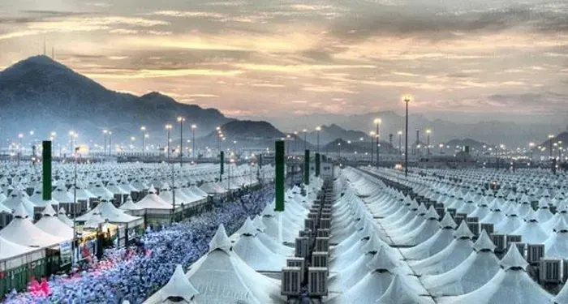

أفكارٌ من الميدان،
تُيسّر رحلة ضيوف الرحمن
إدارية بخبرة ميدانية في مطار الملك عبدالعزيز الدولي خلال مواسم الحج والعمرة. أرصد ما يواجهه الحاج والمعتمر فعلاً، وأحوّله إلى مبادرات وحلول رقمية قابلة للتطبيق.

أرى التفاصيل الصغيرة التي تصنع فرقاً كبيراً
خرّيجة لغة عربية ودبلوم إدارة عامة، عملتُ في صالات الحج والعمرة وفي الميدان مع الحشود، فتعلّمت أن أفضل الحلول تبدأ من الإصغاء لضيف الرحمن.
أجمع بين العمل الإداري الدقيق — الضمانات البنكية، التقارير التحليلية بـ Power BI، وجداول Excel التفاعلية — وبين التفكير الإبداعي في تحسين التجربة، لأقدّم أفكاراً ترفع الكفاءة التشغيلية وتخدم مستهدفات رؤية المملكة ٢٠٣٠.
ألاحظ في الميدان
حقائب منسية، جوازات مفقودة، استفسارات تتكرر على الموظفين كل يوم.
أحلّل جذر المشكلة
أين تتشتت الخدمة؟ ومن الجهات التي يجب أن تتكامل لحلّها؟
أصمّم الفكرة
مبادرة واضحة الأهداف والمراحل والمستفيدين ومؤشرات القياس.
أبني نموذجاً تجريبياً
صفحة أو جهاز تفاعلي يتيح تجربة الفكرة قبل تنفيذها.
أعمال لخدمة ضيوف الرحمن
اضغط على أي مبادرة لعرض التحدي الميداني، والحل المصمم، والأثر المتوقع.
سجل الخبرات الميدانية
من خدمة الركاب في المطار إلى تنظيم الحشود والعمل الإداري في وزارة الحج والعمرة.
- موسم الحج ١٤٤٧هـ٢٠٢٦م · شهران
موظفة موسمية — إداريوزارة الحج والعمرة · مركز الامتثال · إدارة الخدمات المساندة · مطار الملك عبدالعزيز الدولي
- إدارة ومتابعة الضمانات البنكية باستخدام Excel.
- إعداد ومراجعة خطابات استلام وإفراج الضمانات البنكية.
- إعداد تقارير تحليلية باستخدام Power BI.
- دعم الأعمال الإدارية لضمان كفاءة سير العمليات.
- ١٤٤٦هـ٢٠٢٥م · ٦ أشهر
متدربة — برنامج تمهيروزارة الحج والعمرة · مركز الامتثال · مطار الملك عبدالعزيز الدولي
- تنظيم حركة الموظفين الموسميين خلال موسم العمرة.
- دعم الفرق الميدانية إدارياً ومتابعة تطبيق التعليمات التشغيلية.
- إعداد جداول Excel تفاعلية وتقارير دورية لمتابعة الأداء والالتزام.
- موسم الحج ١٤٤٥هـ٢٠٢٤م · شهران
منسقة ميدانيةشركة تسهيل القابضة لخدمة الضيوف
- المساهمة في تنظيم حركة الحشود وتوجيه الحجاج.
- متابعة تطبيق تعليمات السلامة والإرشادات التشغيلية.
- التنسيق مع فرق العمل لضمان جودة الخدمات الميدانية.
- ١٤٤٥هـ٢٠٢٤م · شهران
تجربة ميدانية — خدمة الركابشركة جدة للتطوير (JEDCO) · مشروع Ask Me
- تقديم خدمات عالية الجودة للمسافرين وفق معايير ASQ وSQS.
- التعامل مع استفسارات المسافرين وملاحظاتهم لضمان رضاهم.
- المساهمة في تحسين تجربة العملاء وفق مستهدفات رؤية ٢٠٣٠.
التعليم والمهارات
التعليم
اللغات
المهارات التقنية
المهارات الشخصية
الدورات
- إدخال البيانات ومعالجة النصوص٢٤٠ ساعة · ٢٠٢٣
- مهارات القيادة الفعالة٥٨ ساعة
- مهارات الاتصال في بيئة العمل٤ ساعات
- الأخلاقيات المهنية الإدارية في سنة النبي ﷺ٤ ساعات
- إدارة المهام المتعددة في العمل٣ ساعات
- فن كتابة المراسلات والخطابات الرسميةساعة
إنجازات
يسعدني تواصلك
يسعدني الانضمام إلى فريق يطمح لرفع جودة الخدمات وتحسين تجربة ضيوف الرحمن.